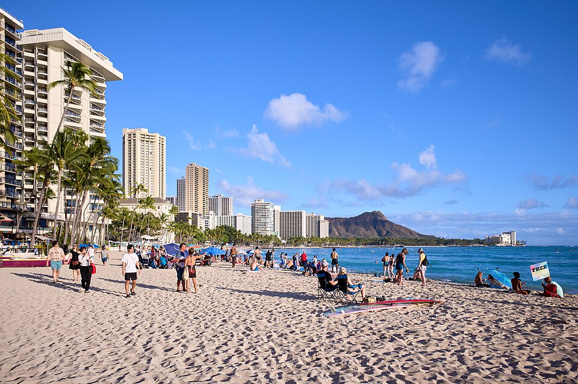

Waikīkī
Place: Waikīkī, Oʻahu
Type: Shoreline / neighborhood / cultural landscape
Story it tells: A place transformed from wetlands and freshwater springs into one of Hawaiʻi’s most recognizable shorelines.

Waikīkī means “spouting fresh water,” referring to the springs and streams that once fed wetlands between the shoreline and inland Honolulu. Before it became a resort district, Waikīkī was a place of water—fishponds, loʻi kalo, and royal recreation, including surfing.
In the late 1800s and early 1900s, Waikīkī began to change. Wetlands were drained, most notably through the construction of the Ala Wai Canal between 1921 and 1928. What had been a landscape shaped by freshwater flow was gradually remade for development.
Hotels, seawalls, and imported sand altered the shoreline. Much of Waikīkī Beach today is engineered, maintained through ongoing restoration projects that preserve the wide sandy shore visitors now associate with the area.
Despite these changes, Waikīkī has long been a place of gathering and recreation. It served as an early center of the Hawaiian Kingdom, and later became central to the global spread of surfing through figures like Olympic gold medalist and ambassador of aloha Duke Kahanamoku.
The name Waikīkī preserves what the landscape once was: not just a beach, but a place defined by freshwater flowing toward the sea.